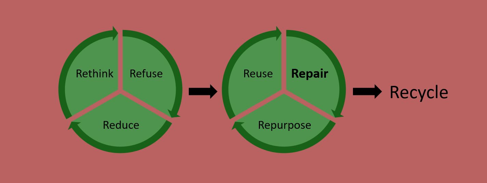

A recent addition to environmentalism is the concept of reparing broken items. The motivation to repair broken items is to keep them out of landfills and have them continue to perform their function so new items are not needed. FixIt Clinics and Right to Repair are two manifestations of the fixing movement.
FixIt Clinics bring together people with items that need repairing, but who do not have the ability to fix the items, with volunteers who have the knowledge, skills, and capability to fix.
Right to Repair is a movement to ensure products can be repaired instead of discarded. repair.org is a leader in bringing this issue to our government.
The philosophy of fixing broken items has several goals:
The mantra of "Reduce, Reuse, Recycle" has evolved.
Added to the beginning of the process are Rethink and Refuse to further prevent waste.
Repair and Repurpose were added to delay waste before items are Recycled.
